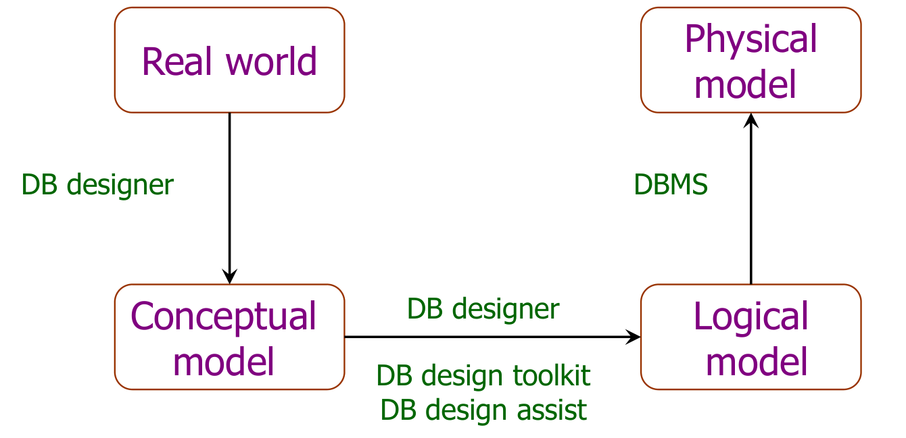

数据库概论
在如今的大数据时代，数据的存储和访问是一个大问题，需要使用数据库这样的工具做到这件事。
数据库应用的不太恰当的例子：
在初高中的时候，想着用学到的 C++ 等语言知识，写一个游戏，游戏的存档功能是当时很难写的一部分。当时的想法是将所有内容、游戏的记录通过文件的形式存储在硬盘中，在下次启动时从文件中读取到内存中，相当于继续游戏。但是这种用文件存储的方式有很大的弊端：
- 不易处理。文件中的内容需要自定义格式，这非常考验字符串处理的能力
- 不够安全。当时不会序列化，所以所有内容是以纯文本的形式存储的，容易直接被修改
- 不能及时保存。只能在指定的时候保存
在了解学习数据库后，我发现可以使用数据库存储游戏中的各种数据。这样的话只需要建立若干个表，把数据之间的关系构建好后处理就非常方便。
数据库存储有联系的数据，单独一个数据也没必要使用数据库存储；存储需要长期存储的数据，短期数据可以直接存储在内存中；存储需要共享的数据，需要多个进程访问的数据。
数据库管理系统（Database Manage System）是管理数据库的系统。学习的数据库本质上是学习数据库管理系统。
数据模型
数据模型（Data Model）是用于描述数据、数据关系、数据语义和一致性约束的概念工具集合。一个数据模型需要满足：
- 反应现实世界
- 用户易于理解
- 易于在计算机中的实现
根据使用场景不同，有三类数据模型：概念模型、逻辑模型、物理模型，
- 概念模型（Conceptual model）：以用户视角进行建模，用于数据库设计
- 逻辑模型（Logical model）：以计算机视角进行数据库建模
- 物理模型（Physical model）：更低层级的抽象，用于底层计算机执行
数据库设计重点在于概念模型，如何将一个现实世界的问题、需求转化为合理的概念模型。

数据模型的基本组成
数据模型中的重要的组件：
- 数据结构（Data structure）：数据的类型，如年龄为整型等，描述了数据的静态特征
- 数据操作（Data manipulation）：对数据的增删查改，描述了数据的动态特征
- 实体性约束（Integrity constraint）：对数据的约束，如年龄不能为负数等
在实际中，数据模型有如下的一些概念：
- 实体（Entity）：现实世界的事物或对象
- 属性（Attribute）：事物所具有的性质
- 键/码（Key）：用于区别不同的实体的属性（属性集）
- 域（Domain）：每个属性的可能的值
- 实体类型（Entity Type）：具有相同的属性的实体的特性
- 实体集合（Entity Set）：具有相同的实体类型的集合
- 关系（Relationship）：不同实体类型之间的关系
实体联系模型（E-R Model）
实体联系模型（Entity-Relation Model）可以较为方便的表示概念模型中实体和实体之间的联系。
实体与实体之间有数量关系，有一对一，一对多，多对多：
- 一对一：例如一个人只有一个身份证号，一个身份证号只能对应一个人
- 一对多：例如一个人只有一个名字，但是同一个名字有多个重名的人
- 多对多：例如多个人可以选一门课，而一个人可以选多门课
可以通过实体联系图（E-R 图）表示这样的模型：
一些符号和规定：
- 矩形代表实体集
- 椭圆形代表属性
- 菱形代表了联系

数据库学什么
目前的数据库所学的有两个方面：
- 数据库设计方面
理解关系模型的本质，学会将现实世界的问题精确而简介的转化为数据库模型，同时要学会对数据库模型的优化。有时候实际关系比较复杂，但本质很简单，我们要找到那个简单的本质。
- 数据库系统设计方面
数据库和数据库系统是两个不同的概念。数据库系统（DBMS）是一个具体的系统，如 MySQL、PostgreSQL 等。这部分主要是学会数据库系统的设计，如查询的优化过程，数据库安全方面等。